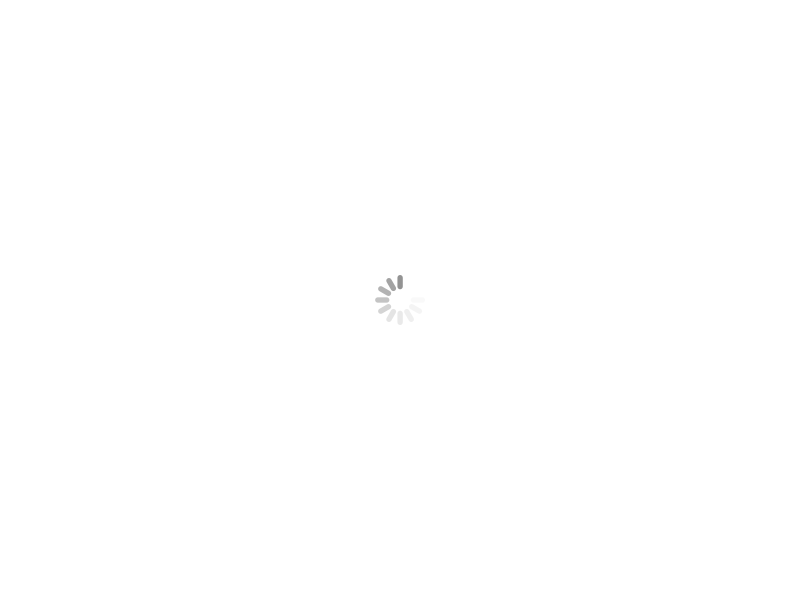

<div data-ng-controller="ShellCtrl as shell">
  <header>
    <div data-ng-include="'modules/core/views/topnav.html'"></div>
  </header>
  <section>
  <!--<section id="wrapper" class="wrapper sidebar-hidden" ng-class="shell.sidebarStatus">-->

    <!-- angular-ui templating -->
    <div data-ui-view class="animate-moveFromTop">
      
    </div>

  </section>
  <!-- TODO: Footer need some rework, either include it in the view. There is no synergy between footer and animation>
  <!-- <footer> -->
  <!--   <div data&#45;ng&#45;include="'views/footer.html'"></div> -->
  <!-- </footer> -->
</div>
